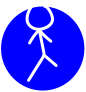
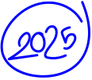
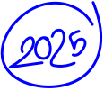
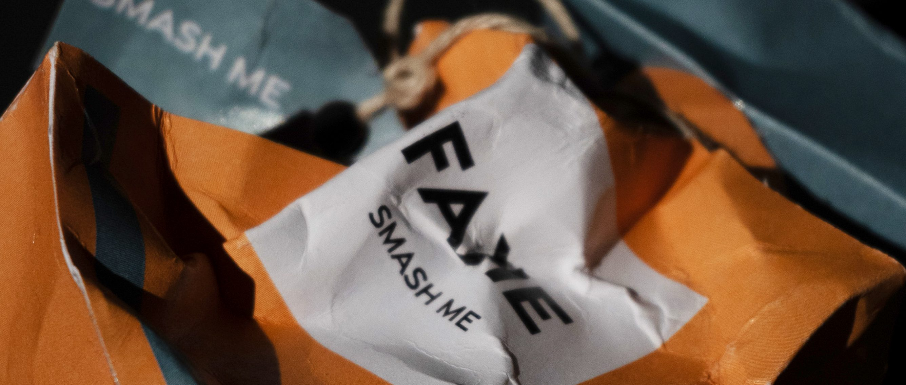
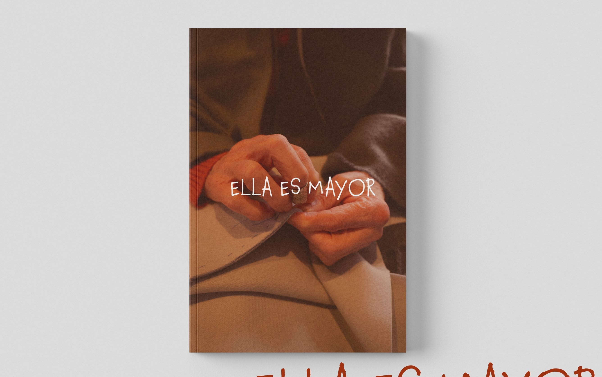
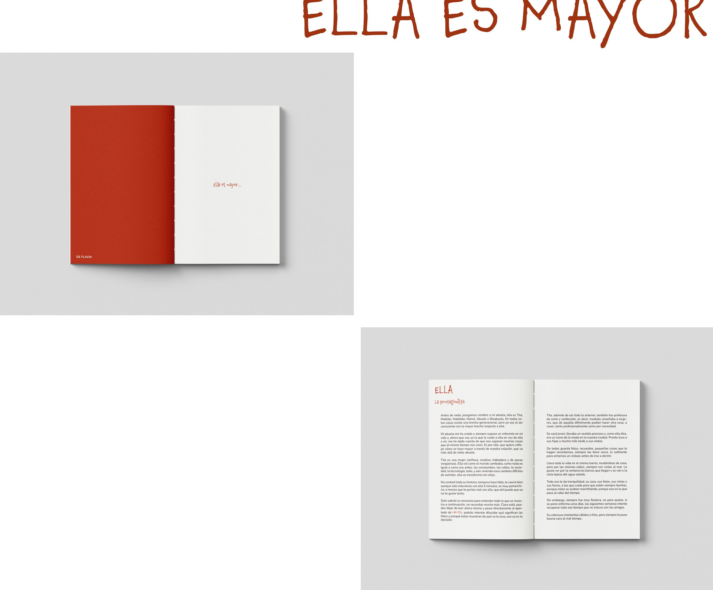
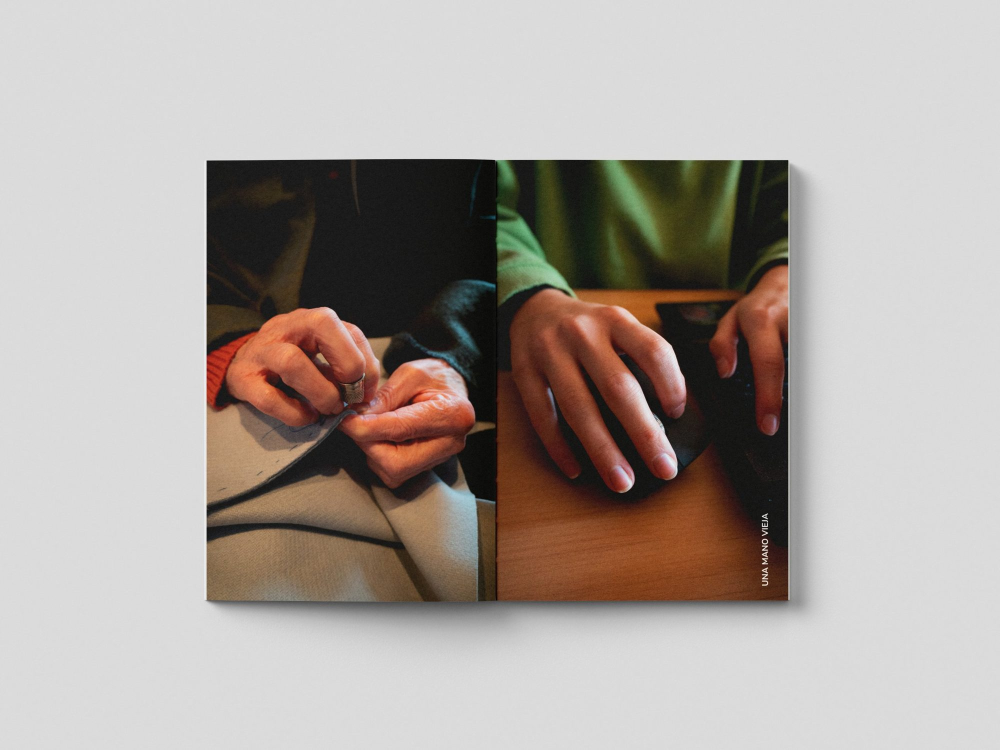
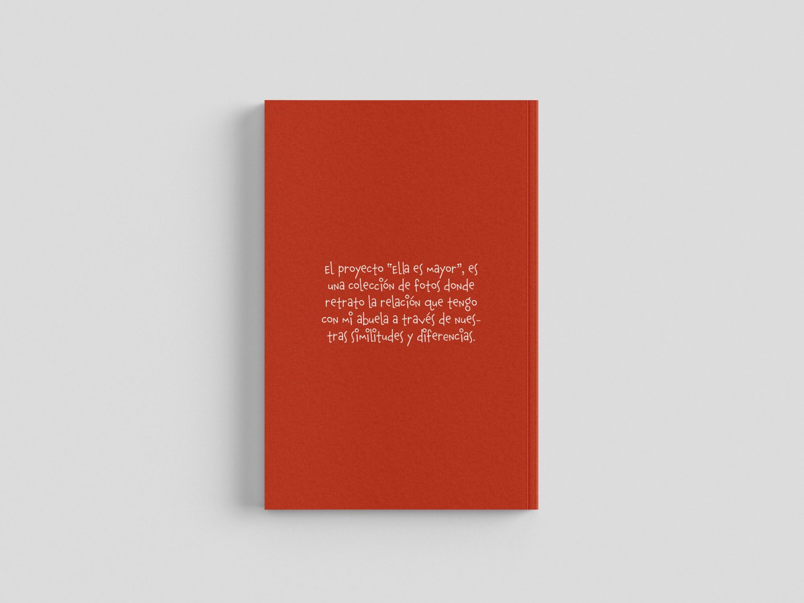
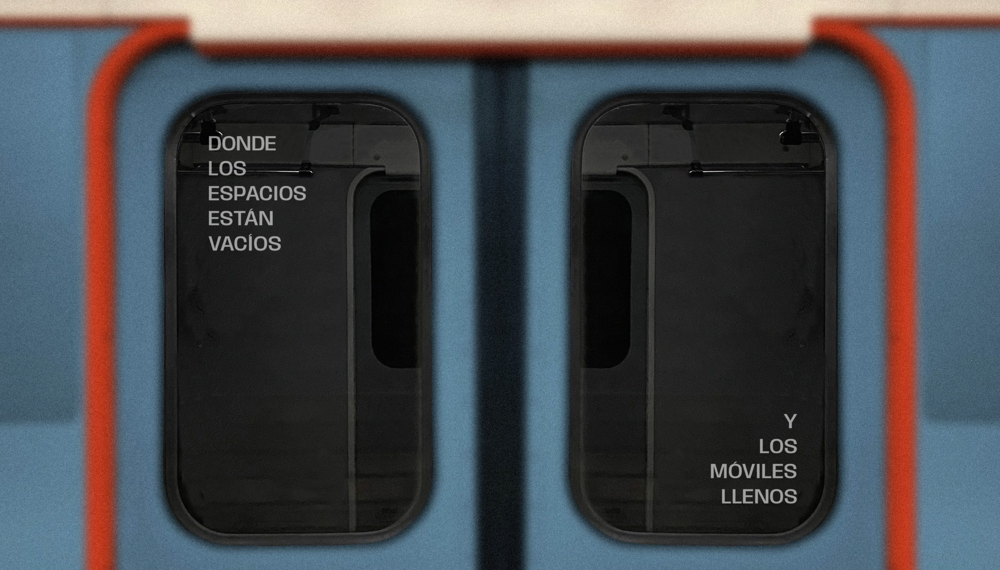

Hola! Soy Flavia, pero me
hago conocer por el nombre
de pulponalua.
Agarra un paraguas y espera
a sumergirte...
trabajos
DOBRAONDAS
Marca y campaña de
publicidad orientada a
la concienciación de la
contaminación del mar.
DIRECCIÓN DE ARTE · EQUIPO
FAKE
Fake es un perfume que
no tiene nada en su
interior, es frágil,
de papel, de aire.
DIRECCIÓN DE ARTE · SOLO
ELLA ES
MAYOR
Una colección de fotos
de retrata puntos de
vista, relaciones y más.
FOTOGRAFÍA · SOLO


CUARTO
LUGAR
Branding e identidad
gráfica de un evento que
explora la desconexión
emocional y social
provocada por la
hiperconectividad digital.
DIRECCIÓN DE ARTE· EQUIPO

HUEVO
Ideación de una
cortinilla inspirándome
en el Canal Cocina.
MOTION GRAPHICS · SOLO

sobre mi
...y esto es un poco sobre quién soy. Me llamo Flavia, y mi nombre artístico es pulponalua.
Vengo de Vigo, Galicia, pero actualmente resido en Madrid. Me considero un perfil creativo multidisciplinar en busca de ideas nuevas y, cuando haga falta, arriesgadas.
Estoy en el último año de un grado en diseño digital en la U-tad e hice mis prácticas en Illion Studios.
Si quieres saber más sobre mi, puedes ver mis trabajos o contactar conmigo.
dobraondas
DIRECCIÓN DE ARTE
2024
- DISEÑO DE MARCA
- PACKAGING
- ILUSTRACIÓN
- MOTION GRAPHICS
Dobraondas es una marca que busca concienciar sobre el daño que causa el petróleo en el mar, especialmente en las costas españolas.
La iniciativa pretende involuclar al espectador de manera activa, haciendo que este se divierta con el producto a la vez que se empapa de la problemática.
Este proyecto fue seleccionado para enseñarlo y testearlo en Madrid es Ciencia. Fue muy bien acogido por niños, padres e incluso profesores, que encontraron el taller como algo divertido y didáctico al mismo tiempo.


En la experiencia que incorporaba esta marca, se le
daba a los niños una caja con el papel para hacer
la figura, las instrucciones en forma de barquito y
algunos recortes de “chapapote”.
Una vez acababan de hacer la figura, se les guiába
a escanear un código QR que mostraba una animación
de la figura realizada en RA.
EQUIPO DEL PROYECTO
Flavia Alonso
Marina Mesa
Rocío Andrade
Gloria Sarmiento
gally
DIRECCIÓN DE ARTE
2026
- DISEÑO DE MARCA
- ICONOGRAFÍA
- ILUSTRACIÓN
- MOTION GRAPHICS
- DISEÑO DE PERSONAJES
Rediseño del personaje Gally, su marca asociada y el Libro Blanco de Accesibilidad para Desarrolladores para la ONCE.
Esta primera propuesta ganó el concunso propuesto por la ONCE, que nos permitió posteriormente hacer un cortometraje explicativo sobre qué es la iniciativa Gally.
Habrá avances del proyecto muy pronto...

EQUIPO DEL PROYECTO
Flavia Alonso
Sofía Carbonell
fake
DIRECCIÓN DE ARTE
2025
- DISEÑO DE MARCA
- PACKAGING
- ILUSTRACIÓN
- FOTOGRAFÍA
Fake es un perfume que no tiene nada en su interior, es frágil, de papel, de aire.
La campaña señala directamente a la industria de los cosméticos y juega conscientemente con las percepciones del espectador. A través de la ausencia, cuestiona las promesas de lujo y perfección de la publicidad, evidenciando lo superficial y lo construido de ciertos discursos de marca.


ella es mayor
FOTOGRAFÍA
2024
- MAQUETACIÓN
- FOTOGRAFÍA
El proyecto “Ella es mayor”, es una colección de fotos donde retrato la relación que tengo con mi abuela a través de nuestras similitudes y diferencias a causa de la educación, la edad y los valores.


“Antes de nada, pongamos nombre a
mi abuela, ella es Tita, Matilde,
Matildita, Mamá, Abuela o
Bisabuela. En todos estos casos
existe una brecha generacional,
pero yo soy el ser consciente con
la mayor brecha respecto a ella.”
“Me di cuenta de que ya no estaba cerca
del mar ni de nada conocido, era algo
emocionante, pero después de un tiempo
empezó a ser algo a lo que añorar, un
conflicto entre lo nuevo y lo viejo. Sin
embargo, en vez de seguir dándole
vueltas a un sentimiento que sabía que
iba a perdurar, preferí verlo desde otro
punto de vista, desde el de mi abuela.”




cuarto lugar
DIRECCIÓN DE ARTE
2025
- DISEÑO DE MARCA
- MOTION GRAPHICS
- IA GENERATIVA
Branding e identidad gráfica de un evento que explora la desconexión emocional y social provocada por la hiperconectividad digital. Es una experiencia inmersiva que se desarrolla a través de un recorrido que combina arte instalativo con realidad aumentada, donde el espectador atraviesa distintas salas y, en cada una, puede utilizar su móvil para mirar a su alrededor y descubrir que no está solo.
La idea es mostrar cómo, a veces, pasamos tanto tiempo frente a las pantallas que nos olvidamos de sentir y de mirar el mundo real. Al final del recorrido, las personas deben decidir si quieren volver al mundo real o quedarse dentro de ese mundo digital.


EQUIPO DEL PROYECTO
Flavia Alonso
Alejandro Escartín
huevo
MOTION GRAPHICS
2025
- DISEÑO DE MARCA
- DISEÑO 3D
- ILUSTRACIÓN
- MOTION GRAPHICS
Ideación de una cortinilla inspirándome en el Canal Cocina y rediseño o ajuste de logo y colores para la mejora de la pieza.